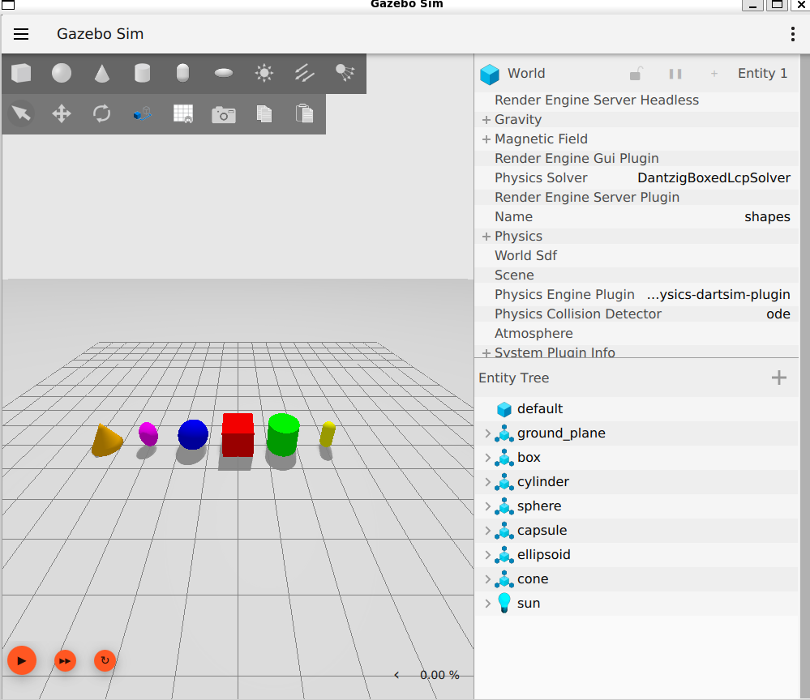
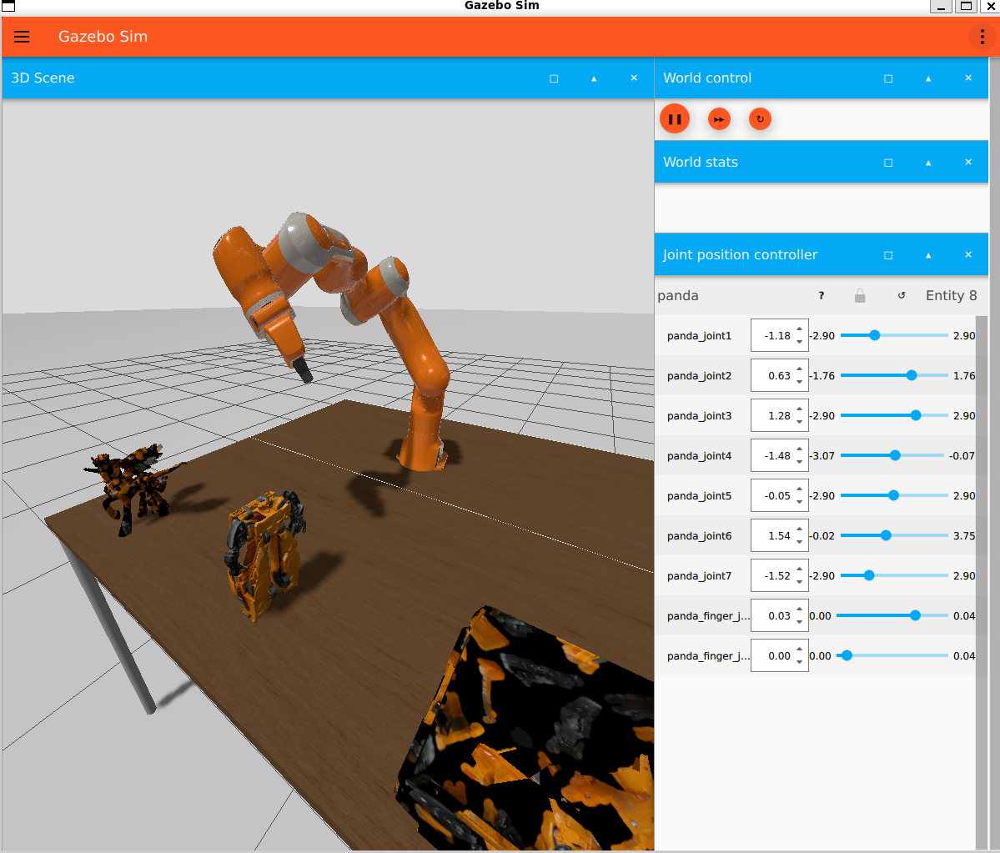
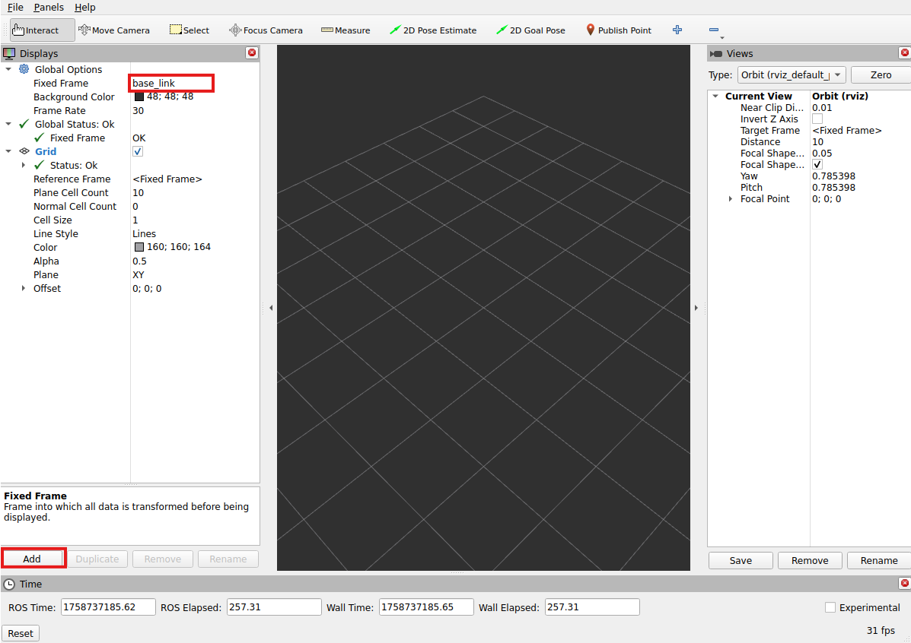
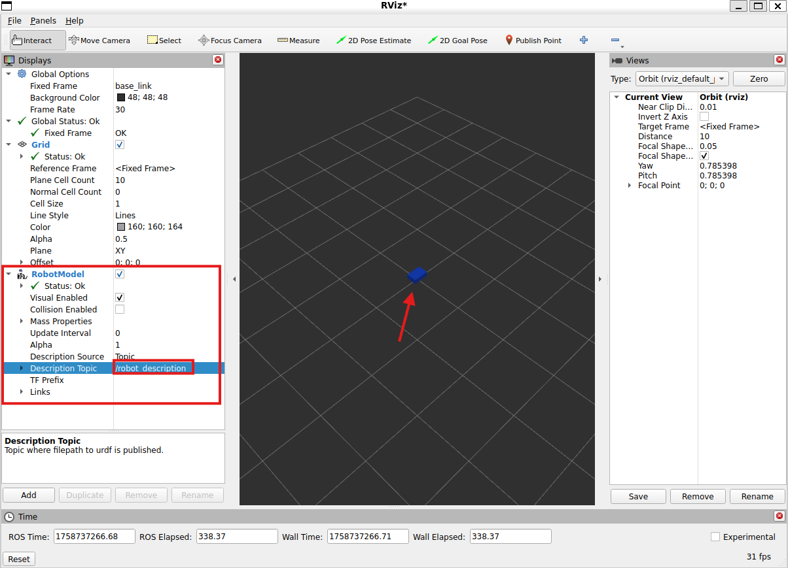

ROS 2 Jazzy Mobile Robot on WSL2 with Gazebo Harmonic
1. Install ROS
1.1 Instalar WSL2 y Ubuntu 24.04
- Si ya estás en Ubuntu nativo: Omite este paso completo (instalación de WSL2 y Ubuntu).
- Si estás en Windows 11: Sigue todos los pasos.
WSL2 (Windows Subsystem for Linux 2) es una mejora del Subsistema de Windows para Linux (WSL), que permite ejecutar distribuciones Linux nativas en Windows sin necesidad de máquinas virtuales tradicionales.
Abre PowerShell como administrador:
Este comando: - Habilita el Subsistema de Windows para Linux (WSL) y la plataforma de máquina virtual. - Configura WSL2 como la versión por defecto. - Descarga e instala Ubuntu 24.04 LTS (Noble Numbat).
1.2 Primer arranque y actualización del sistema
Si estas en windows inicia Ubuntu (Desdes inicio) y crea un usuario/contrasena de UNIX(La contrasena no mostrara caracteres cuando escribes), posteriormente en el shell corre los siguientes comandos:
Esto actualizará tu Ubuntu.
1.3 Configuración del sistema para ROS 2
1.3.1 Configurar el locale (UTF-8)
Primero debemos configurar el locale que se refiere a los ajutes de un sistema para un idioma, ROS utiliza UTF-8. Evitando problemas con caracteres especiales en ROS y otros programas.
sudo apt update && sudo apt install locales
sudo locale-gen en_US en_US.UTF-8
sudo update-locale LC_ALL=en_US.UTF-8 LANG=en_US.UTF-8
export LANG=en_US.UTF-8
Verifica con:
Debe mostrar UTF-8.1.3.2 Habilitar “universe” y añadir repositorio de ROS 2
Primero debemos asegurar que el repositorio de Ubuntu Universe este habilitado.
Ahora agreguemos la clave GPG ROS 2 con apt.
sudo apt update
sudo apt install -y curl
curl -sSL https://raw.githubusercontent.com/ros/rosdistro/master/ros.key | sudo tee /usr/share/keyrings/ros-archive-keyring.gpg
echo "deb [arch=$(dpkg --print-architecture) signed-by=/usr/share/keyrings/ros-archive-keyring.gpg] http://packages.ros.org/ros2/ubuntu $(. /etc/os-release && echo $UBUNTU_CODENAME) main" | sudo tee /etc/apt/sources.list.d/ros2.list > /dev/null
2. Instalar ROS 2 Jazzy Desktop
2.1 Instalación del paquete Desktop
Primero actualiza tu repositorio de apt para tomar en cuenta los cambios que hicimo
Luego instala el paqueteros-jazzy-desktop que incluye la mayoría de las herramientas necesarias para trabajar con ROS 2 y Gazebo.
2.2 Configuración del entorno
Configuraremos el entorno, añade al archivo de inicio (~/.bashrc) la carga automática de los comandos de ROS cada vez que abres la terminal.
2.3 Prueba con nodos de ejemplo
Para esta prueba necesitaras dos terminales porque lo que abre una segunda terminal. En una terminal vamos a correr un codigo sencillo en C++ llamado talker:
Deberias ver que talker imprime en consola, Publishing: numbers y en la consola on listener se imprime I heard: numbers coincidiendo el mensaje. Verificando que los APIs de C++ y python funcionan.
3. Dependencias útiles
3.1 Instalación
sudo apt install ros-jazzy-robot-state-publisher ros-jazzy-joint-state-publisher-gui
sudo apt install ros-jazzy-xacro ros-jazzy-rviz2 ros-jazzy-tf2-ros
3.2 Verificación
ros2 pkg prefix xacro
ros2 pkg prefix robot_state_publisher
ros2 pkg prefix joint_state_publisher_gui
ros2 pkg prefix rviz2
ros2 pkg prefix tf2_ros
Si no muestra error, todo está bien. Debe mostrar la ruta de instalación.
4. Instalación de Gazebo Harmonic
Guía oficial: Gazebo Harmonic – Install on Ubuntu
4.1 Instalación
Warning : En algunos casos, el binario gz puede no quedar en el PATH hasta reiniciar sesión o volver a ejecutar source /opt/ros/jazzy/setup.bash.4.2 Prueba directa
Debería abrirse una ventana de Gazebo con un mundo de prueba.

4.3 Lanzar Gazebo con ROS 2
Usar cualquier ejemplo para probar

5. Preparar Workspace ROS 2 en WSL2
5.1 Ubicación recomendada
Tip: Trabaja dentro del sistema Linux (
~/ros2_ws) y no en/mnt/c/...
5.2 Clonar repositorio
On GitHub (or GitLab/Bitbucket):
- New repository → Nombralo:
ros2-jazzy-mobile-robot(o lo que gustes). - Inicializa con un README (checked).
- (Optional) Agrega una LICENSE (MIT es común).
- Deja
.gitignorevacío por ahora (agregaremos uno amigable con ROS más adelante). - Copia el SSH del repositorio (por ejemplo,
git@github.com:Gulden8ag/ROS2_Tractor.git).
Confirma que estas en main branch.
5.3 Configurar SSH keys para GitHub
# 1) Make a key (press Enter for default path; add a passphrase if you want)
ssh-keygen -t ed25519 -C "oliver.ochoa2@iberopuebla.mx"
# 2) Start agent & add the key
eval "$(ssh-agent -s)"
ssh-add ~/.ssh/id_ed25519
# 3) Copy the public key to clipboard (or just print and copy)
cat ~/.ssh/id_ed25519.pub
/home/oliver_ros2/.ssh/id_ed25519
- Public key → /home/oliver_ros2/.ssh/id_ed25519.pub
Esta es la ubicación por defecto y recomendada. Ahora entra a GitHub:
- Ve a GitHub → Settings → SSH and GPG keys → New SSH key.
- Pega todo el contenido de
id_ed25519.pub→ Add SSH key. - Prueba la conexión:
5.4 Crear el esqueleto Workspace de ROS2
Creamos la estructura básica del workspace:
cd ~/ros2_ws
mkdir -p src
printf "# ROS 2 Jazzy Mobile Robot\n\nWorkspace for learning ROS 2 Jazzy on WSL2 with Gazebo Harmonic.\n" > README.md
.gitignore amigable con ROS:
cat > .gitignore << 'EOF'
# colcon/ROS 2 build artifacts
build/
install/
log/
# Python caches
__pycache__/
*.pyc
# VS Code / CLion / IDE stuff
.vscode/
.idea/
# macOS / Windows cruft
.DS_Store
Thumbs.db
# CMake extras
CMakeFiles/
CMakeCache.txt
cmake-build-*/
compile_commands.json
# Misc
*.swp
EOF
Hacemos un commit inicializando el workspace:
6. Crear primer paquete Python mi_robot
Convenciones:
- Nombres de paquetes en minúsculas y con guiones bajos.
- Nombres de nodos en minúsculas y con guiones bajos.
- Nombres de archivos en minúsculas y con guiones bajos.
Ahora usaremos los siguientes de ejemplo pero los puedes modificar:
- Workspace: ros2_ws
- Paquete: mi_robot
6.1 Creación
Esto generará la estructura básica del paquete.
ros2_ws/
└─ src/
└─ mi_robot/
├─ package.xml
├─ setup.py
├─ setup.cfg
├─ resource/mi_robot
├─ mi_robot/__init__.py
└─ test/
6.2 Dependencias iniciales (solo si la maquina es nueva)
6.3 Abrir en VS Code
Se recomienda instalar las siguientes extensiones: - Python - Robotics Developer Environment - C/C++7. Crear nodo de prueba
En VsCode: src/mi_robot/mi_robot/ → New File → talker.py
7.1 Archivo talker.py
import rclpy
from rclpy.node import Node
from std_msgs.msg import String
class Talker(Node):
def __init__(self):
super().__init__('talker')
self.pub = self.create_publisher(String, 'chatter', 10)
self.timer = self.create_timer(0.5, self.tick)
self.i = 0
def tick(self):
msg = String()
msg.data = f"Hello ROS 2 ({self.i})"
self.pub.publish(msg)
self.get_logger().info(msg.data)
self.i += 1
def main():
rclpy.init()
node = Talker()
rclpy.spin(node)
node.destroy_node()
rclpy.shutdown()
7.2 Editar src/mi_robot/setup.py
8. Build & Run
8.1 Compilar
cd ~/ros2_ws
source /opt/ros/jazzy/setup.bash
rosdep install --from-paths src -y --rosdistro jazzy
colcon build --symlink-install
source install/setup.bash
8.2 Ejecutar
9. URDF mínimo y Launch con RViz
9.1 Crear archivos
En VS Code Explorer crear adentro de src/mi_robot/:
- folders:
launch/,urdf/,rviz/ - files:
launch/display.launch.py,urdf/robot.urdf.xacro(leaverviz/empty for now; we’ll save a config from RViz later)
Alternativamente puedes correr este comando bash:
cd ~/ros2_ws/src/mi_robot
mkdir launch urdf rviz
touch launch/display.launch.py urdf/robot.urdf.xacro rviz/display.rviz
9.2 Archivo urdf/robot.urdf.xacro
Abre src/mi_robot/urdf/robot.urdf.xacro y pega:
<?xml version="1.0"?>
<robot xmlns:xacro="http://ros.org/wiki/xacro" name="mi_robot">
<!-- One visible base link so RViz shows *something* -->
<link name="base_link">
<visual>
<origin xyz="0 0 0.1"/>
<geometry>
<box size="0.3 0.2 0.1"/> <!-- 30×20×10 cm -->
</geometry>
<material name="blue"><color rgba="0.1 0.3 0.9 1.0"/></material>
</visual>
<collision>
<origin xyz="0 0 0.1"/>
<geometry><box size="0.3 0.2 0.1"/></geometry>
</collision>
<!-- inertial is optional for RViz-only; add later for physics -->
</link>
</robot>
9.3 Archivo launch/display.launch.py
Abre src/mi_robot/launch/display.launch.py y pega:
from launch import LaunchDescription
from launch_ros.actions import Node
from ament_index_python.packages import get_package_share_directory
import os
import xacro
def generate_launch_description():
pkg_share = get_package_share_directory('mi_robot')
urdf_path = os.path.join(pkg_share, 'urdf', 'robot.urdf.xacro')
# Turn Xacro into a URDF string
robot_description_config = xacro.process_file(urdf_path).toxml()
return LaunchDescription([
# Anchor the robot so RViz has a fixed frame:
# map -> base_link (no rotation)
Node(
package='tf2_ros',
executable='static_transform_publisher',
arguments=['0', '0', '0', '0', '0', '0', 'map', 'base_link'],
name='map_to_base_link'
),
Node(
package='joint_state_publisher_gui',
executable='joint_state_publisher_gui',
name='joint_state_publisher_gui'
),
Node(
package='robot_state_publisher',
executable='robot_state_publisher',
name='robot_state_publisher',
parameters=[{'robot_description': robot_description_config}]
),
Node(
package='rviz2',
executable='rviz2',
name='rviz2'
# You can add ['-d', '<path to rviz/display.rviz>'] after you save one
),
])
9.4 Actualizar package.xml y setup.py
Abre src/mi_robot/package.xml y agrega:
<package format="3">
<name>mi_robot</name>
<version>0.0.0</version>
<description>Single-package robot demo</description>
<maintainer email="oliver.ochoa2@iberopuebla.mx">Oliver Ochoa</maintainer>
<license>MIT</license>
<!-- Build system -->
<buildtool_depend>ament_python</buildtool_depend>
<!-- Runtime deps used in launch/URDF/RViz -->
<exec_depend>ament_index_python</exec_depend>
<exec_depend>xacro</exec_depend>
<exec_depend>robot_state_publisher</exec_depend>
<exec_depend>joint_state_publisher_gui</exec_depend>
<exec_depend>rviz2</exec_depend>
<exec_depend>tf2_ros</exec_depend>
<export>
<build_type>ament_python</build_type>
</export>
</package>
Abre src/mi_robot/setup.py y agrega:
from setuptools import setup
import os
from glob import glob
package_name = 'mi_robot'
setup(
name=package_name,
version='0.0.0',
packages=[package_name] if os.path.isdir(package_name) else [],
data_files=[
(os.path.join('share', package_name), ['package.xml']),
(os.path.join('share', package_name, 'launch'), glob('launch/*.py')),
(os.path.join('share', package_name, 'urdf'), glob('urdf/*.xacro')),
(os.path.join('share', package_name, 'rviz'), glob('rviz/*.rviz')),
],
install_requires=['setuptools'],
zip_safe=True,
maintainer='Oliver Ochoa',
maintainer_email='oliver.ochoa2@iberopuebla.mx',
description='Single-package robot with URDF + launch + RViz',
license='MIT',
tests_require=['pytest'],
entry_points={'console_scripts': []},
)
9. Ejecutar
cd ~/ros2_ws
colcon build --symlink-install
source install/setup.bash
ros2 launch mi_robot display.launch.py
- En RViz, pon el Fixed Frame a mapa (Estamos publicando
map -> base_link).

- Agrega un
RobotModelen RViz para ver el robot. - En Description_topic pon
/robot_description.

- Deberias ver un cubo azul (base_link).
Si todo se visualiza correctamente, termina guardando la configuración de RVizFile → Save Config en src/mi_robot/rviz/display.rviz, para que se cargue automáticamente la próxima vez que abras RViz desde el launch file.
Modifica el launch file para que cargue el config:
# In display.launch.py, replace the rviz Node with:
Node(
package='rviz2',
executable='rviz2',
arguments=['-d', os.path.join(pkg_share, 'rviz', 'display.rviz')],
name='rviz2'
),
Reconstrute y vuelve a lanzar:
cd ~/ros2_ws
colcon build --symlink-install
source install/setup.bash
ros2 launch mi_robot display.launch.py